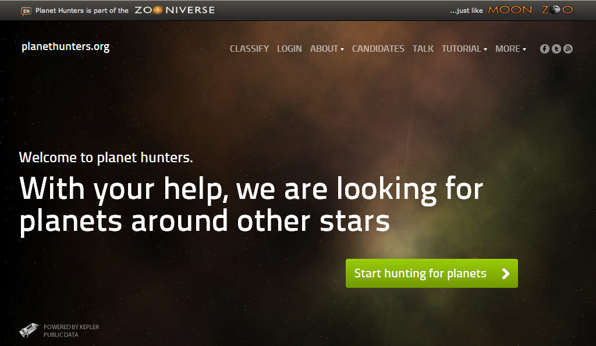
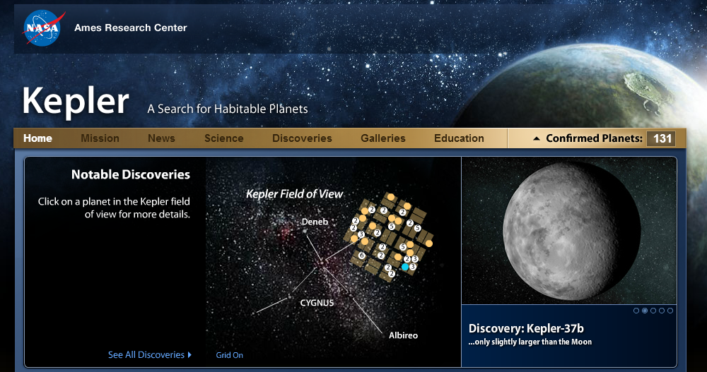
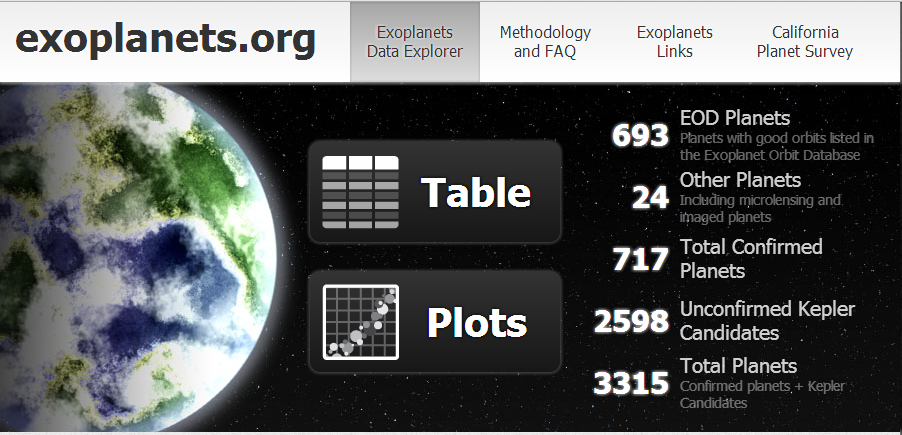
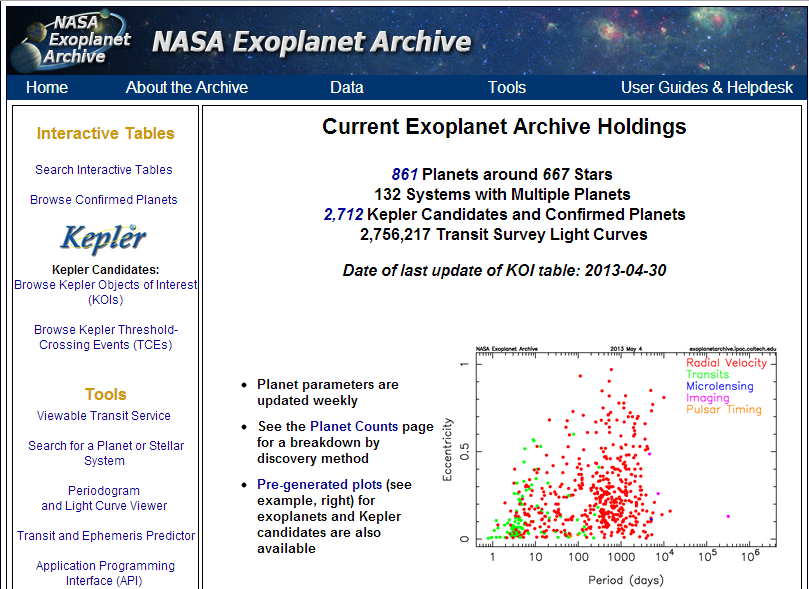
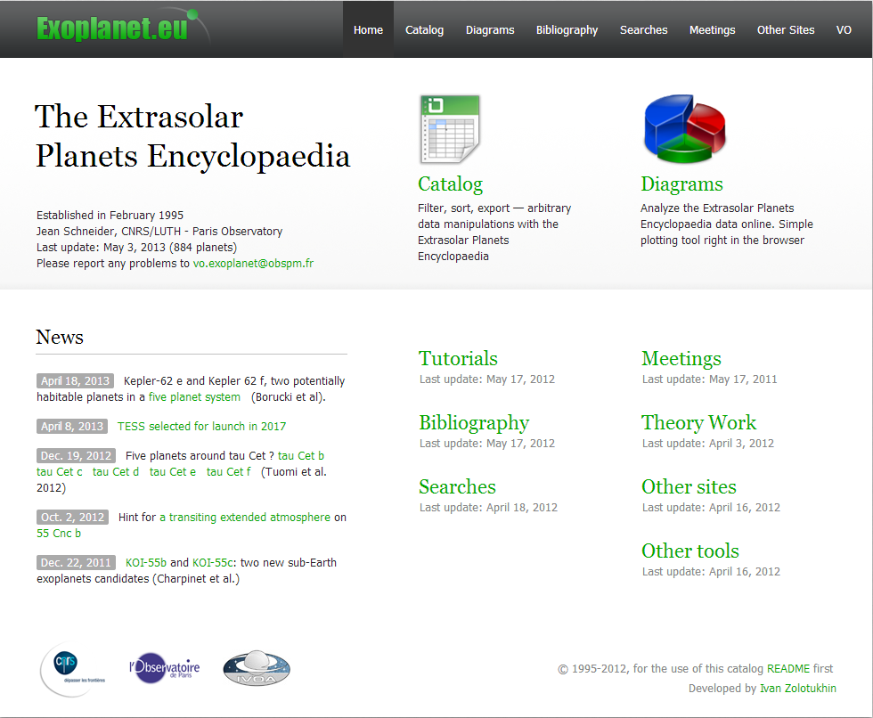
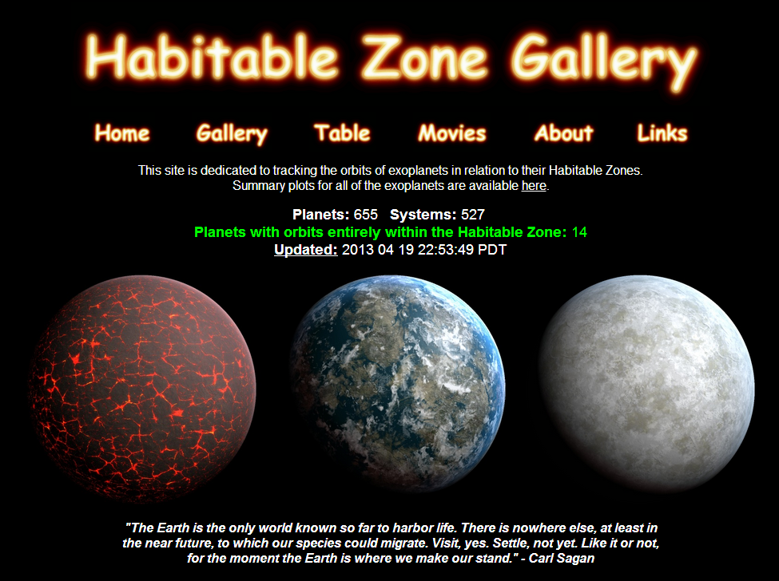

我们的征途——系外行星¶
在我们人类几千年的文明史中，我们一直试图解释自己：
我们是谁？我们从哪里来？我们向何处去？
我们是宇宙间孤独的存在么？生命火种真的来自地球么？茫茫星空中还有没有我们可以居住的家园？
所有这些问题，都或多或少的这样的问题有关联：
宇宙中有没有系外行星？有多少系外行星？系外行星可以承载生命么？
几千年以来，我们对行星的了解，一直被限制在太阳系内，我们可以计算精确的行星轨道，可以用铅笔发现海王星。但是我们对太阳系内行星了解的越多，就越想知道：行星，真的只在我们的太阳系中么？
1988 年，Campbell, B., Walker, G. A. H., & Yang, S. 在 Astrophysical Journal 上面发表了一篇题为 A search for substellar companions to solar-type stars [0] 的文章，文章使用 radial velocity 的方法发现恒星异常，只是文章说的很保守，”these low-mass objects could represent the tip of the planetary mass spectrum”. 直到 2003 年，Artie P. 等人才使用 4 组不相关的数据来验证了这颗行星的发现（论文）。这样我们可以说，第一颗系外行星，其实是在 1988 年就看到了。
1995 年，人们确认了第一颗围绕主序星运动的系外行星，名为 51 Pegasi b 。

间隔十多年，可谓是好事多磨难。现在，随着各类技术的出现，和人们对系外行星的关注度越来越高，系外行星已经不在稀有，被确认的系外行星现在达到了 1713 颗（此为 NASA Exoplanet Archive 的数据，截止到 2014-05-14； 在 The Extrasolar Planets Encyclopaedia 上截止到 2014-05-28 有 1792 颗），而被列入 Kepler Object of Interest 的候选达到了 3845 颗（NASA Exoplanet Archive，截止到 2013-02-13），并且有 443 个多行星系统（NASA Exoplanet Archive，截止到 2013-05-14）。
越来越多的系外行星的发现，使得有些原来看起来很遥远的科幻，也突然变得亲切起来。似乎我们的世界有了一个很重要的目标，那就是“飞出太阳系，飞向系外行星”。

系外行星：历史，方法，恒星属性，距离。来自 http://www.wired.co.uk/magazine/archive/2011/02/start/infoporn
什么是系外行星¶
什么是系外行星？自然不在太阳系内的行星就是系外行星。那么什么是行星呢？这是很难定义的，不过 WGESP (Working Group on Extrasolar Planets) 给了一个“可行的定义” [4]。
我想严格定义在这里并不重要，其实这类定义是要随着我们的发现更改的。思考定义很枯燥，不过多少有点值得思考的是 [1] ：
- 进行核聚变天体可以是行星么？
- 四处自由流浪的天体可以可以是行星么？
- 曾经发生过核聚变但是后来熄灭的天体可以是行星么？
结论可以看尾注。[1]
系外行星观测手段¶
系外行星的观测手段在近几年来有了很多进展，而且新的方法还在被提出。[2]
径向速度（Radial Velocity，简称 RV）¶
径向速度是一种很重要的方法，因为径向速度变化可以引起恒星光谱的多普勒偏移，即这种方法是可以跟光谱联系起来的，而光谱的测量，很久以来一直是我们最精密的测量手段之一。目前大多数被确认的系外行星，都是用径向速度的方法首先观测到的。

径向速度（Radial Velocity）变化，引起光谱的多普勒偏移。
这张图片直观的说明了为什么我们可以通过测量恒星的径向速度的变化来得知该恒星是否有行星：围绕恒星转的天体会引起恒星在径向速度上的周期性变化。我们可以根据这个周期性变化来获得另外一个天体的相关数据，例如质量，公转周期等。
但是这种方法对于那些过于小的行星就不起作用了，因为行星太小的话，恒星的径向速度变化太小，我们很难精确的确认。
凌日（Transit Light Curves）¶
当一个行星从恒星面向我们的一面经过时，会遮挡恒星的部分光芒，从而导致我们观测到的恒星的亮度减小。
凌日方法寻找行星的原理。
Kepler 卫星的工作原理主要就是凌日法。这种方法的特点是速度快，而且可以用来寻找直径小得多的行星。但是导致恒星亮度变化的原因很多，行星可能只是其中一种，所以 Kepler 卫星目前找到的是大量的地外行星候选名单，真正的确认一般需要其他方法辅助。[3]
我们也可以通过仔细的研究凌日的时刻和持续时间来获得更多的信息。例如对于一个有多个行星的系统，凌日时间可能会有些变化。这样甚至可以发现那些不会发生凌日的行星，因为这些天体之间通过引力相互左右的。这种方法是凌日时间变分法(Transit Timing Variation，TTV)。
微引力透镜（Gravitational Micro-lensing）¶
微引力透镜的方法寻找系外行星。点击图片看大图。
引力透镜效应是一种广义相对论效应：天体的引力场可以使得光线弯曲，从而使得光线不经过次天体时的引力场和经过此天体时的引力场不同。
配图是一个很好的说明（点击图片看大图）。当引力透镜现象发生时，如果作为透镜的天体是一个带有行星的恒星，那么行星的运动会导致引力透镜效应产生的图像不同，行星也有引力场。
系外行星数据¶
系外行星的研究对于普通人来说，似乎只是听听看看就完了的事情。但是并非如此。在天文领域，按照国际惯例，大型天文项目的数据是会变成公共数据的。 Kepler 卫星和大型的系外行星的数据也是开放的，所以每个人都可以拿到数据。 当然，数据不是力量，我们拿到数据只是第一步，更加关键的是，我们能够从数据中获得什么。很多的网站提供了数据和用来分析数据的工具，我们甚至不需要自己写程序，只需要点点画画，就可以得到一些漂亮的结果。所以，我们每个人都可以参与到地外行星的寻找（看下面开放数据和工具的 Planet Hunters 一条）和分析中来。
开放数据和分析工具¶
列举一下我这段时间遇到的一些提供数据和工具的网站：
Planet Hunters ，一个可以帮助 Kepler 寻找行星的网站，只需要点几下，就可以学会如何寻找行星，可以帮助 Kepler 找到行星。
http://kepler.nasa.gov/，NASA 的 Kepler 项目官网。有些科普性的内容不错。
http://exoplanets.org/，包括所有的数据和一套用来作图的完整的工具，所有的工作都可以在线完成，包括作图和分析。
http://planetquest.jpl.nasa.gov/ ，NASA 的 JPL 的网站，除了数据，还有一些科普性的内容，甚至游戏和漫画，也有分析工具。内容很多。

Exoplanet Archive CalTech， 提供数据和全面的分析工作。
http://exoplanet.eu/，除了很方便的获取数据，还可以在线绘制散点图和 Histogram 图。
http://www.openexoplanetcatalogue.com/index.php， 这个网站提供了很棒的可视化工具，包括BubbleChart，Histogram，当然也数据，而且是可以筛选的数据。更可贵的是，他们是开源的。他们有个数据可视化竞赛。[5]

http://www.stefanom.org/SystemicConsole/new/index.html， 一个程序，用来分析系外行星的数据的。从起的名字来看，似乎是在下一盘很大的棋。

http://www.hzgallery.org/ ，关于宜居带，Habitable Zone. [6]

系外行星数据可视化¶
一张合理的图像会给我们比数字更加直观的感受，可以说通过合理的设计图像，可以获得一些看数据得不到的灵感，insight.
当然可视化是一个很庞大很复杂的话题，我对这个方向了解不多，所以保持对他们的敬畏，这一部分就仅仅列举几个有趣的可视化吧。
这篇文章的第二张图，是一张非常棒的图，信息量很大，而且很容易看懂。我再重新贴过来。
系外行星：历史，方法，恒星属性，距离。来自 http://www.wired.co.uk/magazine/archive/2011/02/start/infoporn 图的制作过程见此链接：http://www.informationisbeautiful.net/book/process/executing-the-exos/
”XKCD 的 1071 号作品“是一个很有趣的可视化，使用了 bubble chart 的手段：

这个图没有交互，交互版本有两个：http://codementum.org/exoplanets/ 或者 http://openexoplanetcatalogue.com/bubblechart.html .
Kepler-Visualization 是一个用 Processing 写的可视化程序，把所有的行星都放在一个恒星周围，可以看出恒星距离的分布等等。
Space-Bangalore / Exoplanet-Arudino 似乎是一个很有趣的 repo，利用 Arduino 来做好玩的玩具。
未完¶
系外行星是一个正在热门研究中的话题，这个文档会不断总结一些相关的内容。
或许我们可以想象一下，在不久的将来，我们定位了很多适合生命生存的星球，然后我们进行大规模的星际移民，终于像海因莱茵在《时间足够你爱》里面描述的一样，人类会进入大散居时代，于是人类的未来变得更加广阔，星际成为海洋，我们在这里骄傲的航行。
再久远一些，或许我们会问，我们的宇宙是独一无二的么？
| [0] | Astrophysical Journal, Part 1 (ISSN 0004-637X), vol. 331, Aug. 15, 1988, p. 902-921. |
| [1] | (1, 2) 按照定义，上面的三个问题的答案是这样的： * 不能是一个进行核聚变的天体，因为这样就像恒星了。 * 要围绕着一个恒星（或恒星遗迹）转的，要不然就会放任漂泊了，这类也不叫行星，很多可以被归类到次棕矮星（sbu-brown dwarf）。（不过在 Exoplanets 的数据库中有一颗 CFBDSIR2149，是无寄主的行星。） * 即使是现在没有核聚变，那么质量太大了，以至于在 H 的热核聚变的极限质量至上了，甚至可能曾经进行过核聚变，只是不能维持下去罢了，那也不能叫做行星，因为有一类棕矮星（brown dwarf）已经把这类包括进来了。 |
| [2] | (1, 2) 维基百科有关于观测方法的很好的解释：系外行星侦测法 .不过，英文的 Wikipedia 的解释更加全面：Methods of detecting extrasolar planets . |
| [3] | 当然 Kepler 的任务可不仅仅是找候选者。更详细的了解 Kepler 卫星可以阅读维基百科的“开普勒太空望远镜词条” 。 |
| [4] | http://www.dtm.ciw.edu/boss/definition.html |
| [5] | http://openexoplanetcatalogue.com/contest/ |
| [6] | 维基百科的“行星适居性” 和 ASTR 202 。这个话题也将会在本文档中记录。 |